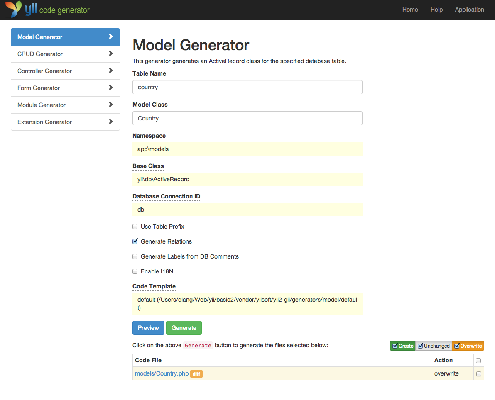
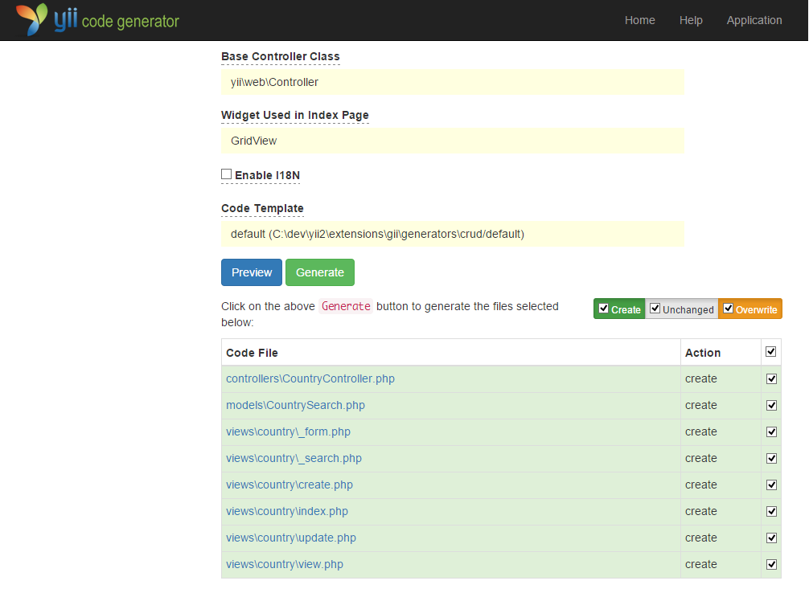

使用 Gii 生成代码 ¶
本章将介绍如何使用 Gii 去自动生成 Web 站点常用功能的代码。使用 Gii 生成代码非常简单， 只要按照 Gii 页面上的介绍输入正确的信息即可。
贯穿本章节，你将会学到：
- 在你的应用中开启 Gii
- 使用 Gii 去生成活动记录类
- 使用 Gii 去生成数据表操作的增查改删（CRUD）代码
- 自定义 Gii 生成的代码
开始 Gii ¶
Gii 是 Yii 中的一个模块。
可以通过配置应用的 modules 属性开启它。通常来讲在 config/web.php 文件中会有以下配置代码：
$config = [ ... ];
if (YII_ENV_DEV) {
$config['bootstrap'][] = 'gii';
$config['modules']['gii'] = [
'class' => 'yii\gii\Module',
];
}
这段配置表明，如果当前是开发环境，
应用会包含 gii 模块，模块类是 yii\gii\Module。
如果你检查应用的入口脚本 web/index.php，
将看到这行代码将 YII_ENV_DEV 设为 true：
defined('YII_ENV') or define('YII_ENV', 'dev');
鉴于这行代码的定义，应用处于开发模式下，按照上面的配置会打开 Gii 模块。你可以直接通过 URL 访问 Gii：
http://hostname/index.php?r=gii
信息： 如果你通过本机以外的机器访问 Gii，请求会被出于安全原因拒绝。 你可以配置 Gii 为其添加允许访问的 IP 地址：
'gii' => [ 'class' => 'yii\gii\Module', 'allowedIPs' => ['127.0.0.1', '::1', '192.168.0.*', '192.168.178.20'] // 按需调整这里 ],

生成活动记录类 ¶
选择 “Model Generator” （点击 Gii 首页的链接）去生成活动记录类。并像这样填写表单：
- Table Name:
country - Model Class:
Country

然后点击 “Preview” 按钮。你会看到 models/Country.php 被列在将要生成的文件列表中。可以点击文件名预览内容。
如果你已经创建过同样的文件，使用 Gii 会覆写它，
点击文件名旁边的 diff 能查看现有文件与将要
生成的文件的内容区别。

想要覆写已存在文件，选中 “overwrite” 下的复选框然后点击 “Generator”。如果是新文件，只点击 “Generator” 就好。
接下来你会看到一个包含已生成文件的说明页面。如果生成过程中覆写过文件， 还会有一条信息说明代码是重新生成覆盖的。
生成 CRUD 代码 ¶
CRUD 代表增，查，改，删操作，这是绝大多数 Web 站点常用的数据处理方式。选择 Gii 中的 “CRUD Generator” （点击 Gii 首页的链接）去创建 CRUD 功能。本例 “country” 中需要这样填写表单：
- Model Class:
app\models\Country - Search Model Class:
app\models\CountrySearch - Controller Class:
app\controllers\CountryController

然后点击 “Preview” 按钮。你会看到下述将要生成的文件列表。

如果你之前创建过 controllers/CountryController.php 和 views/country/index.php 文件（在指南的使用数据库章节），
选中 “overwrite” 下的复选框覆写它们（之前的文件没能全部支持 CRUD）。
试运行 ¶
用浏览器访问下面的 URL 查看生成代码的运行：
http://hostname/index.php?r=country/index
可以看到一个栅格显示着从数据表中读取的国家数据。支持在列头对数据进行排序， 输入筛选条件进行筛选。
可以浏览详情，编辑，或删除栅格中的每个国家。 还可以点击栅格上方的 “Create Country” 按钮通过表单创建新国家。


下面列出由 Gii 生成的文件，以便你研习功能和实现， 或修改它们。
- 控制器：
controllers/CountryController.php - 模型：
models/Country.php和models/CountrySearch.php - 视图：
views/country/*.php
信息： Gii 被设计成高度可定制和可扩展的代码生成工具。 使用它可以大幅提高应用开发速度。 请参考 Gii 章节了解更多内容。
总结 ¶
本章学习了如何使用 Gii 去生成为数据表中 数据实现完整 CRUD 功能的代码。